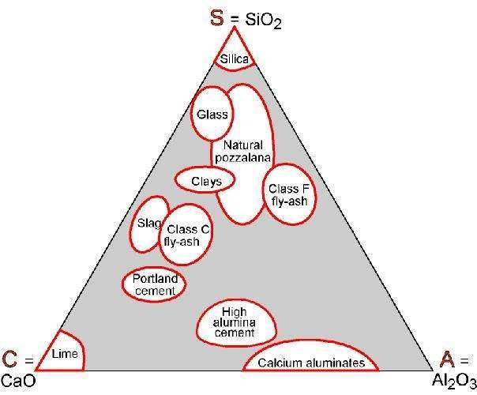

Cement (ordinary Portland)
Overview & uses
Binder for concrete, mortar and cement-based products.
Family-level source ranges, not a declared construction grade. * = source estimate. Source prices are historical references. Original PDF includes the supporting notes and photographs.
Composition
63% CaO, 21% SiO2, 6% Al2O3 + additions water:cement ratio by weight = 0.65
General properties
Density
1.8e3 - 2.2e3 kg/m^3
Price
* 0.0755 - 0.0906 GBP/kg
Material form that data applies to
Building system
Mechanical properties
Young's modulus
* 40.2 - 41.6 GPa
Shear modulus
* 16.5 - 17 GPa
Bulk modulus
* 23.9 - 24.8 GPa
Bending modulus
* 40.2 - 41.6 GPa
Poisson's ratio
0.2 - 0.24
Yield strength (elastic limit)
* 1.9 - 2.1 MPa
Tensile strength
* 1.9 - 2.1 MPa
Compressive strength
* 18.7 - 20.7 MPa
Bending strength
1.9 - 2.1 MPa
Elongation
* 0 - 0.01 % strain
Hardness - Vickers
* 5.6 - 6.2 HV
Fatigue strength at 10^7 cycles
* 0.9 - 1.41 MPa
Fracture toughness
0.35 - 0.45 MPa.m^0.5
Mechanical loss coefficient (tan delta)
0.01 - 0.03
Thermal and combustion properties
Thermal conductor or insulator?
Poor insulator
Thermal resistivity
1.11 - 1.25 m.°C/W
Thermal expansion coefficient
15 - 22 μstrain/°C
Specific heat capacity
* 813 - 867 J/kg.°C
Melting point
927 - 1.2e3 °C
Maximum service temperature
* 627 - 857 °C
Minimum service temperature
-160 - -150 °C
Flammability
Non-flammable
Hygro-thermal properties
Water vapor permeability
9.76e-12 - 2.6e-11 kg.m/s.m^2.Pa
Electrical properties
Electrical conductor or insulator?
Poor insulator
Electrical resistivity
2.06e11 - 2.06e12 μohm.cm
Dielectric constant (relative permittivity)
* 8 - 12
Dissipation factor (dielectric loss tangent)
* 0.001 - 0.01
Dielectric strength (dielectric breakdown)
1.44 - 1.59 MV/m
Natural color
Critical Materials Risk
High critical material risk?
No
Acoustic properties
Processability (scale 1 = impractical to 5 = excellent)
Durability
Strong alkalis
Limited use
Organic solvents
Excellent
UV radiation (sunlight)
Excellent
Wear resistance
Unacceptable
Industrial atmosphere
Acceptable
Rural atmosphere
Excellent
Marine atmosphere
Excellent
Geo-economic data for principal component
Annual world production, principal component
4.18e9 tonne/yr
Primary material production: energy and climate change
Climate change (CO2-eq) (virgin grade production)
* 0.853 - 0.941 kg/kg
Embodied energy (virgin grade production)
* 4.66 - 5.13 MJ/kg
Water Usage
* 35.1 - 38.8 l/kg
Material processing: energy
Machining, grinding, embodied energy
* 17.6 - 19.1 MJ/kg
Material processing: climate change
Machining, grinding, climate change (CO2-eq)
* 1.15 - 1.25 kg/kg
Recycling and end of life
Recycle fraction in current supply
1.14 - 1.26 %
Combust for energy recovery
Original technical diagrams
Original extracted images, without redrawing or recompression.

Source page 6
Source PDF